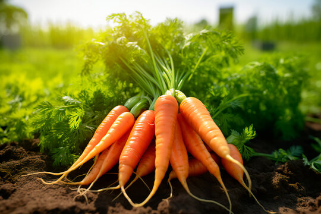
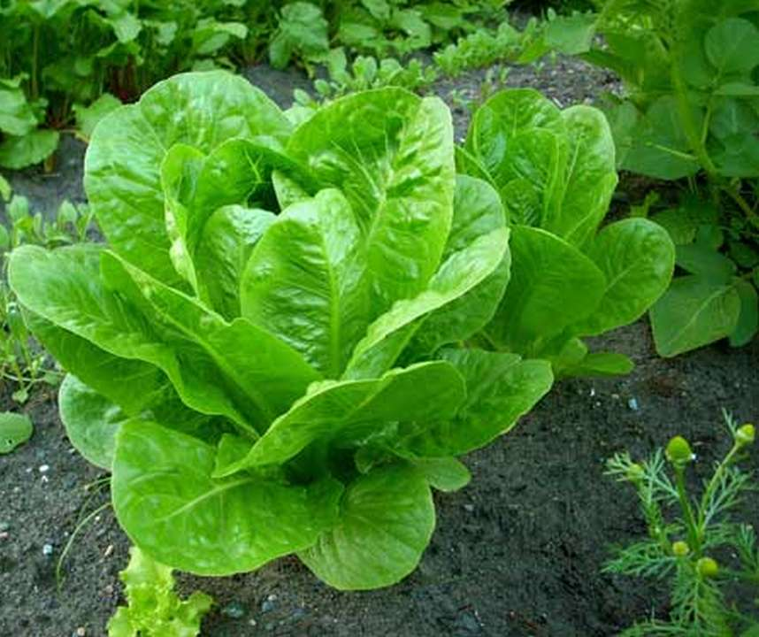
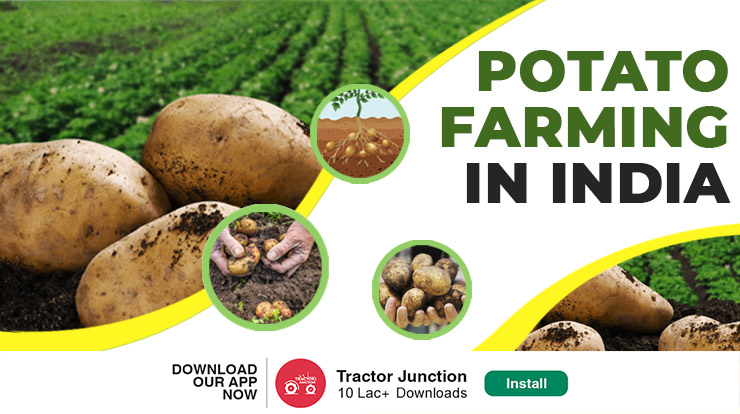
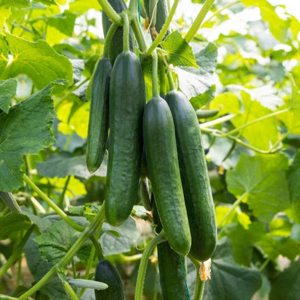
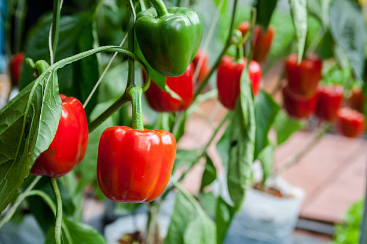
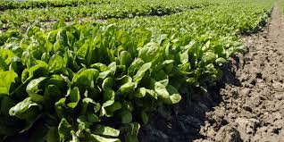
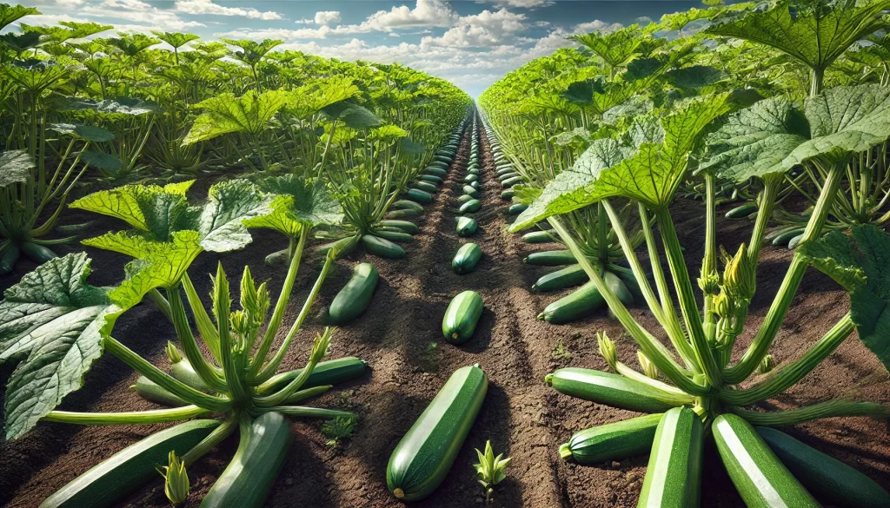
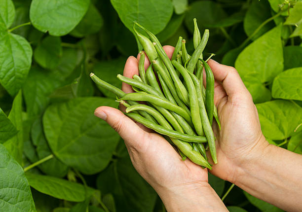
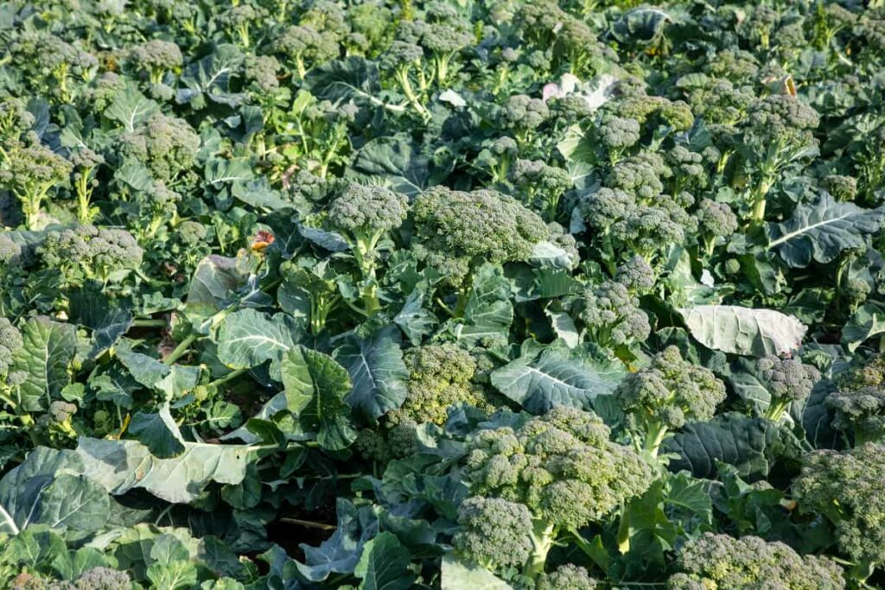

Our Fresh Produce

Organic Tomatoes
$3.99 per kg

Fresh Carrots
$2.99 per kg

Fresh Lettuce
$2.49 per kg

Organic Potatoes
$1.99 per kg

Crisp Cucumbers
$1.49 per kg

Bell Peppers
$2.79 per kg

Fresh Spinach
$3.29 per kg

Organic Zucchini
$2.99 per kg

Green Beans
$3.49 per kg

Organic Broccoli
$2.69 per kg